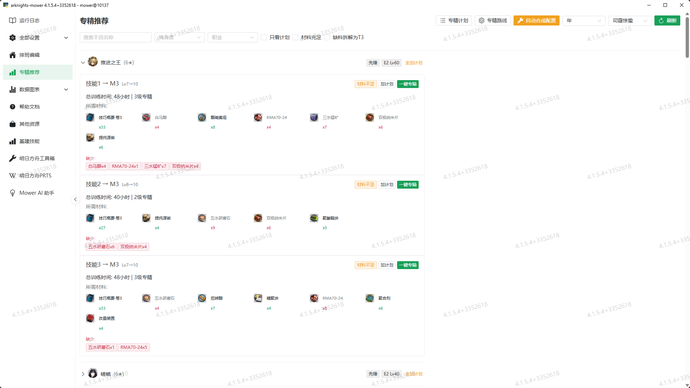
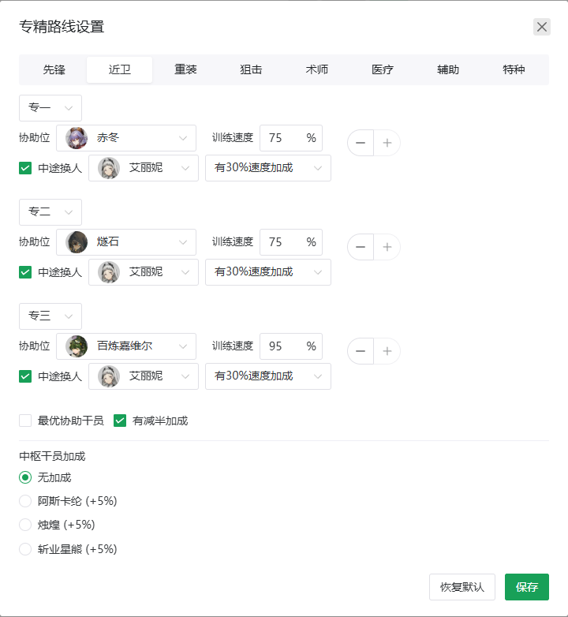

专精推荐¶
功能概述¶
专精推荐功能基于森空岛数据，自动分析你的干员和仓库材料，计算哪些技能可以进行专精（技能等级 7→10，即专一至专三），支持一键创建自动化专精任务，并在仓库扫描后自动检测材料充足的计划项并安排专精。
版本要求
本教程适用于 Mower 版本 4.1.5.5 及以上。
前置条件¶
- Mower 正在运行：专精任务会被添加到 Mower 的任务队列中自动执行
- 森空岛数据：首次使用需点击「刷新」按钮从森空岛拉取干员和仓库数据
页面概览¶
打开 Mower ，点击「专精推荐」标签页，可以看到：
{kind=link}

关键按钮¶
| 按钮 | 说明 |
|---|---|
| 刷新 | 从森空岛拉取最新干员数据和仓库材料，重新分析专精推荐 |
| 专精计划 | 查看和管理已加入计划的技能列表 |
| 专精路线 | 配置各职业的专精工具人（协助位干员）、换人策略和中枢加成 |
| 自动合成配置 | 根据计划中的技能，自动生成制造站合成配方并创建加工任务 |
| 保存合成配置 | 将当前的制造站合成方案保存为默认配置，供后续一键还原 |
| 还原合成配置 | 从已保存的默认配置恢复制造站合成方案 |
| T5 合成干员 | 选择负责合成 T5（金材料）的制造站干员，默认为「年」 |
| 技巧概要干员 | 选择负责合成技巧概要·卷3 的制造站干员，默认为「司霆惊蛰」 |
筛选条件¶
| 筛选项 | 说明 |
|---|---|
| 搜索干员 | 按干员名称搜索 |
| 稀有度 | 按 3★/4★/5★/6★ 筛选 |
| 职业 | 按先锋/近卫/重装/狙击/术师/医疗/辅助/特种筛选 |
| 只看计划 | 仅显示已加入专精计划的技能 |
| 材料充足 | 仅显示当前仓库材料完全满足专精链路的技能 |
| 缺料拆解为 T3 | 将缺料按合成配方拆解为 T3 基础材料展示，方便查看需要刷哪些材料 |
示例
某技能缺 1 个「聚合剂」和 2 个「异铁块」，勾选 T3 拆解后，聚合剂会拆为 T3 材料（如酮凝集组、异铁组、全新装置），异铁块会拆为异铁组。最终以 T3 材料汇总展示，方便你直观了解需要刷哪些蓝材料。
使用流程¶
第一步：拉取数据¶
点击「刷新」按钮，从森空岛同步干员和仓库数据。同步成功后页面会展示所有可专精的干员和技能。
Warning
如果提示「暂无干员数据」，请先确保森空岛数据已配置并可正常访问。
第二步：查看推荐¶
展开干员折叠面板，可以看到每个可专精技能的详细信息：
- 技能名 → M3：当前等级（如 Lv7→10）和目标等级
- 总训练时间：完成全程专精所需的原始时间（未计入协助加成，实际用时会更短）
- 所需材料：列出所有需要的材料及数量，绿色背景表示该材料已足够
- 缺少材料：红色标签展示缺失的材料及数量
Tip
勾选「材料充足」可以快速筛选当前即可开专的技能。
第三步：加入计划¶
对于想要专精的技能，点击「加计划」按钮将其加入专精计划：
- 点击单个技能的「加计划」→ 该技能加入计划
- 点击干员右侧的「全加计划」→ 该干员所有技能加入计划
- 左上角「专精计划」按钮可以查看和管理计划列表
- 计划会持久化保存到本地
tmp/matery_plan.json，刷新页面不会丢失
加入计划后，页面顶部会自动显示「计划缺料汇总（T3）」，将所有计划内技能的材料缺口拆解到 T3 层级进行汇总展示，方便你一眼看清该刷哪些材料。
缺料汇总实时更新
计划缺料汇总是实时计算的。每次添加或移除计划项，汇总结果都会自动刷新，无需手动触发。
第四步（可选）：配置专精路线¶
本步骤为可选操作。默认配置预设了各职业的最优训练速度干员，但这些干员的最高速度技能均需精二解锁，且你可能尚未持有这些干员。请根据你的干员池按需调整。
点击「专精路线」按钮可以查看和调整各职业的训练方案。以下场景建议动手修改：
| 场景 | 操作 |
|---|---|
| 默认配置中的干员你没有或未精二 | 替换为你拥有的已精二的同职业训练干员 |
| 你拥有中枢加成干员（阿斯卡纶/烛煌/斩业星熊） | 在「中枢干员加成」中选上对应的干员（+5% 速度） |
| 你没有艾丽妮或逻各斯 | 取消「中途换人」勾选 |
| 你不需要减半加成 | 取消「有减半加成」勾选 |
如果无需修改，保持默认设置即可。修改完成后点击「保存」使全自动专精也能使用你的路线配置。以下为各配置项的详细说明。
默认协助干员推荐¶
本模块为每个职业预设了三名干员（专一/专二/专三各一名），以下速度数值为精二后的最高训练速度：
| 职业 | 专一 | 专二 | 专三 |
|---|---|---|---|
| 先锋 | 夜半 (75%) | 缄默德克萨斯 (80%) | 嵯峨 (60%) |
| 近卫 | 赤冬 (75%) | 燧石 (75%) | 百炼嘉维尔 (95%) |
| 重装 | 极光 (75%) | 暴雨 (75%) | 星熊 (60%) |
| 狙击 | 假日威龙陈 (95%) | 埃拉托 (75%) | W (95%) |
| 术师 | 特米米 (75%) | 薄绿 (75%) | 死芒 (95%) |
| 医疗 | 阿 (60%) | 濯尘芙蓉 (75%) | 阿 (60%) |
| 辅助 | 铃兰 (60%) | 铃兰 (60%) | 浊心斯卡蒂 (95%) |
| 特种 | 罗宾 (75%) | 缄默德克萨斯 (80%) | 归溟幽灵鲨 (95%) |
重要
上表中的速度需要干员达到精英 2才能解锁。例如赤冬精英 0 仅有 +30%，精英 2 后提升至 +75%。其中阿、特米米、濯尘芙蓉三位干员的精英 0 技能与训练室无关，未精二时无法提供任何训练加成，必须精二后使用。
路线设置界面¶
{kind=link}

各配置项说明：
| 配置项 | 说明 |
|---|---|
| 协助位干员 | 在训练室协助位提供训练速度加成的干员 |
| 训练速度 | 该干员提供的训练速度加成百分比（不包含基础 5% 和中枢加成，总上限 100%） |
| 中途换人 | 勾选后，Mower 会在训练中途将协助干员替换为换人干员 |
| 换人干员 | 中途替换进来的干员（艾丽妮或逻各斯），用于触发精神锻炼/言语之义 |
| 有 30% 速度加成 | 换人干员是否匹配训练位职业，从而获得额外 +30% 速度 |
| 最优协助干员 | 一键填入各职业最优高速干员 |
| 有减半加成 | 该职业是否启用专一半时间加成策略（影响所有阶段） |
| 中枢干员加成 | 选择中枢中提供训练加成的干员（阿斯卡纶/烛煌/斩业星熊，+5%） |
中途换人机制详解
默认路线开启了中途换人，这是大幅缩短总训练时间的关键策略。
1. 核心原理
艾丽妮 (精二) 的「精神锻炼」与 逻各斯 (精二) 的「言语之义」效果相同：在协助位持续协助同一位干员达到 5 小时 后，该干员下一次专精训练开始时立即完成 50% 进度。
2. 默认执行流程（以近卫专二→专三为例）
- 专二训练：百炼嘉维尔以 95% 速度推进训练
- 训练尾声：中途换入艾丽妮（持续超过 5 小时）
- 专三训练开始：立即完成 50% 进度（触发精神锻炼）
3. 换人干员选择
| 训练位职业 | 推荐换人干员 | 额外加成 |
|---|---|---|
| 近卫 / 狙击 | 艾丽妮 | 职业匹配 +30% |
| 术师 / 辅助 | 逻各斯 | 职业匹配 +30% |
| 其余职业 | 艾丽妮 或 逻各斯 | 无额外加成 |
Tip
如果换人干员的职业与训练位干员不匹配，仅触发 50% 进度减半效果，没有额外速度加成。
中枢干员加成详解
部分干员在控制中枢中可提供训练速度加成：
| 干员 | 精英阶段 | 技能 | 加成 |
|---|---|---|---|
| 阿斯卡纶 | 精英 0 | S.W.E.E.P.主管 | +5% |
| 烛煌 | 精英 0 | 下城人脉 | +5% |
| 斩业星熊 | 精英 0 | 下城人脉 | +5% |
不叠加
三者均为「同种效果取最高」，拥有任意一位即可。其 +5% 会叠加在协助位速度之上（总速度上限 100%）。这也是唯一需要在专精路线中手动配置的部分——默认是关闭状态。
第五步：一键专精¶
展开目标技能，点击「一键专精」按钮，弹出确认对话框：
{kind=link}
确认后 Mower 会自动：
- 添加「上班」任务 → 将协助干员和训练干员放入训练室
- 添加「技能专精」任务 → 自动执行全流程专精（收集 → 升级 → 确认）
- 根据路线设置，自动计算中途换人时间并创建对应任务
第六步：等待自动化执行¶
任务由 Mower 自动执行：
- 收集完成的训练 → 选择技能 → 开始下一级专精
- 到达中途换人时间点 → 自动将协助干员替换为艾丽妮/逻各斯
- 训练完成 → 自动收集，或如仍未完成则刷新任务时间
- 材料不足时会中止并发送错误通知
全自动专精¶
Mower 在执行仓库扫描时，会自动检测专精计划中材料完全充足的技能，并自动安排专精任务。全自动专精会读取你在专精路线中保存的配置，正常执行换人和级联推进。
工作原理¶
- 将目标技能加入专精计划
- 待仓库材料充足后，Mower 在仓库扫描环节自动检测
- 材料完全满足的技能会被自动添加为「技能专精」任务
- 材料不足的技能会被跳过，并在日志中记录
自动更新合成配置¶
在全自动专精的同时，Mower 还会自动更新制造站合成方案，确保计划中所需的材料按需合成，减少手动配置的步骤。
使用建议
只需将想要专精的技能全部加入专精计划，然后通过自动合成配置提前准备好材料。当材料到位后，Mower 会在仓库扫描时自动检测并安排专精，实现"放进去就等着"的全自动体验。
自动合成配置¶
对于材料不足的技能，可以使用「自动合成配置」一键生成制造站合成方案：
- 先将所需的技能加入专精计划
- 在「T5 合成干员」下拉框中选择负责合成 T5 金材料的干员（如"年"）
- 在「技巧概要干员」下拉框中选择负责合成技巧概要·卷3 的干员（如"司霆惊蛰"）
- 点击「自动合成配置」
本模块将会自动：
- 分析计划中所有技能的材料缺口
- 将高阶材料拆解为 T4/T3 基础材料
- 生成制造站合成配置（九色鹿 + T5 干员 + 技巧概要干员三条产线）
- 创建对应的加工任务
- 使用已有的 T3 库存抵扣
计划缺料汇总会以 T3 材料标签实时展示，方便你直观了解需要刷哪些材料。
保存与还原合成配置¶
合成配置支持保存和还原：
- 点击「保存合成配置」→ 将当前的合成方案保存为默认配置，写入
tmp/workshop_preset.json - 点击「还原合成配置」→ 从已保存的默认配置一键恢复合成方案
这在频繁切换专精计划时非常实用——你可以先保存当前的"日常合成"方案，尝试新的专精合成配置后随时还原。
常见问题¶
Q: 为什么有些干员没有显示？
A: 列表中仅展示已精二且至少有一个技能未达到专三的干员。如果干员未精二或所有技能已满专三，不会出现。
Q: 为什么提示「暂无干员数据」？
A: 页面依赖 tmp/cultivate.json 中的森空岛数据。点击「刷新」按钮拉取即可。如果拉取失败，请检查森空岛 API 配置是否正常。
Q: 材料显示充足，但专精时失败了？
A: 页面显示的材料充足是基于上次刷新时的仓库快照。如果在刷新后、任务执行前材料被其他制造或加工消耗，游戏内就会因材料不够而中止。建议确认材料到位后再点击一键专精。
Q: 中途换人没有触发？
A: 同时检视以下几点：
①「专精路线」中该职业是否勾选了「中途换人」并填写了换人干员名
② 换人干员（艾丽妮或逻各斯）是否已精二——精二后才能解锁精神锻炼/言语之义
③ 你是否拥有该换人干员
④ 专精路线是否已点击「保存」——全自动专精会读取你保存的路线配置
Tip
另外请确认「中枢干员加成」是否已正确选择，该加成影响训练速度计算，虽然不直接决定换人是否触发，但会影响换人时间点的计算。
Q: 专精计划会丢失吗？
A: 不会。计划保存在本地 tmp/matery_plan.json，页面每次加载时会从服务端同步。
Q: 一键专精和全自动专精有什么区别？
A: 「一键专精」在页面上手动点击，立即添加「上班」+「技能专精」任务到队列。「全自动专精」在 Mower 执行仓库扫描时自动触发，为材料充足的计划项直接安排技能专精任务，无需手动干预。
Q: 计划里的技能材料够，为什么没有自动安排？
A: 全自动专精检测的是整条专精链路的材料总和（从当前等级到 M3），而不是单个等级。比如干员当前 Lv7，需要专一、专二、专三的材料全部到位才会触发。另外，自动检测依赖森空岛库存数据，如果数据过期则以实际扫描结果为准，建议先点击「刷新」确保数据和游戏同步。
Q: 中枢加成选哪个干员？
A: 阿斯卡纶、烛煌、斩业星熊三者效果完全相同（均为 +5%，同种效果取最高），选你拥有的任意一位即可。默认关闭，需要在专精路线中手动选择才会生效。